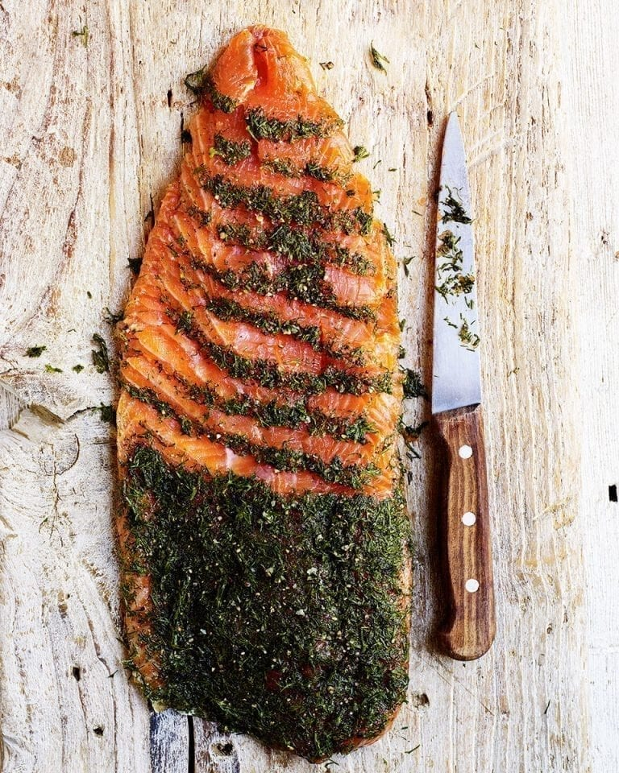

Dill Cured Trout

Another classic, and a delicious way to serve fresh fish!
Cold-cured trout, freshly caught in a scandinavian river.
Ingredients
- Trout fillets (with skin)
- Salt
- Sugar
- Juniper berries
- Crushed black pepper
- Fresh dill
Steps
- Combine salt, sugar, berries and pepper in a bowl.
- Cover fish fillets with salt mixture and sprinkle with dill.
- Wrap some plastic around the fish and let it cure for at least one day.
- Unwrap the fish and remove the excess salt mixture and dill.
- Slice thinly and serve with some rye bread.